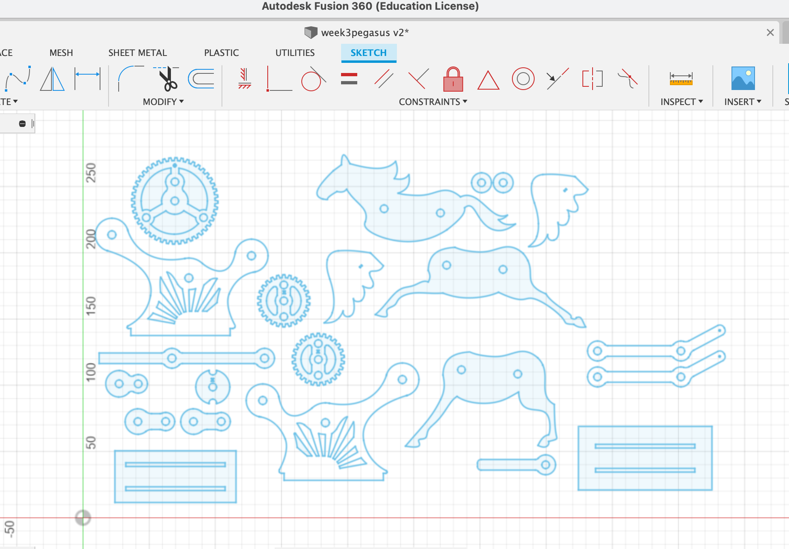
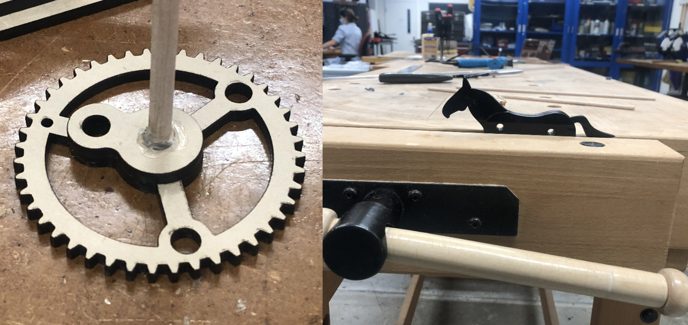
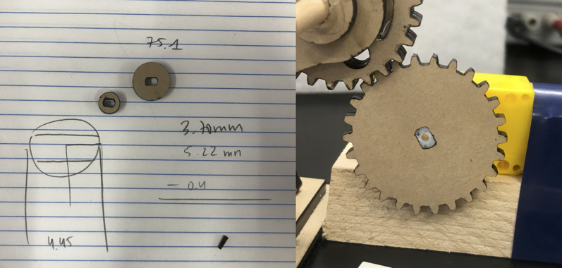

Motorized Rocking Horse
Prompt & Inspiration

Image Source: Mondroid Mobile
Our assignment this week was to create a kinetic sculpture that made use of an electronic circuit. One of my favorite childhood fairy tales was a Mongolian fable which features an Old Man and his Flying Horse. I liked the idea of making a flying horse because it has two separate 'motions' its gallop and its flapping wings.
Stock & Gearbox
We were provided a 3.3V DC motor as the actuation device for our sculpture. I needed to fabricate some kind of gearbox to transfer the motion of the shaft of the motor to any sculpture. So my next step was to choose between the available stock materials shown below.

I saw noticed that the cross-sections of the plastic and cardboard was mostly hollow so if I cut gear teeth into it, it would likely not bear any weight. I gave the shaft of the motor a quick 'pinch-test' to try and estimate the total torque it might be able to provide. I decided that wood stock (not pictured) might be too heavy given the size of the motor.

I obtained a free-to-use design of a gear box that would convert the rotational motion of the motor to the 'rocking' motion of the sculpture. I downloaded the .pdf file provided by the creator of this design, converted it to a .dtx to import to Fusion 360. Like last week, I used an overlay reference technique to then draw in the shape of a horse in the Sketch tool as shown below. The original project used thinner stock, so I adjusted a number of dimensions and removed some support pieces.
Given the thickness of the acrylic, I used a 5mm/s speed on the laser cutting, which made for a total cut time of about ~20 minutes. Unfortunately, soon after lasercutting, I pulled out my pieces to realize that I had miscalculated the kerf on my circular pieces. This meant that the wooden rods I planned to use to secure the pieces together would be too loose.  Given the time and material it required to re-attempt the laser cutting process, I decided to make do with the pieces I had. I applied hot glue and pressed the pieces flat using the table clamps as shown. I did get the opportunity to use more of the hand tools like the woodsaw and belt sander in order to adjust for the mis-fitting pieces, so in the end I was not upset.
Motor & Circuit
Once the mechanical component of my sculpture was completed, I began on my motor and circuit. I began by soldering two lead wires onto the motor. Then, I needed to attach a gear to the stubby shaft that the motor game with. I used a micrometer and some trial-and-error with the laser printer before I got the right fit shown on the right.

My circuit is very simple, with only three main components. The potentiometer controlled the voltage delivered to the motor, and thus the sculpture's speed. As shown below, I set the total input voltage to 3.3V. The circuit's total current was around ~0.1A although it has a very high variance. This made sense since the motor has to provide more torque when the sculpture is being pushed up than when it is being brought down.

At the end of this week, I've learned to be more modular with my fabrication projects. I really should have cut out a test of the rod holes like I did with the motor gear. I am hoping to build on this project next week when we start on microcontroller programming. I look forward to returning to my little pegasus.